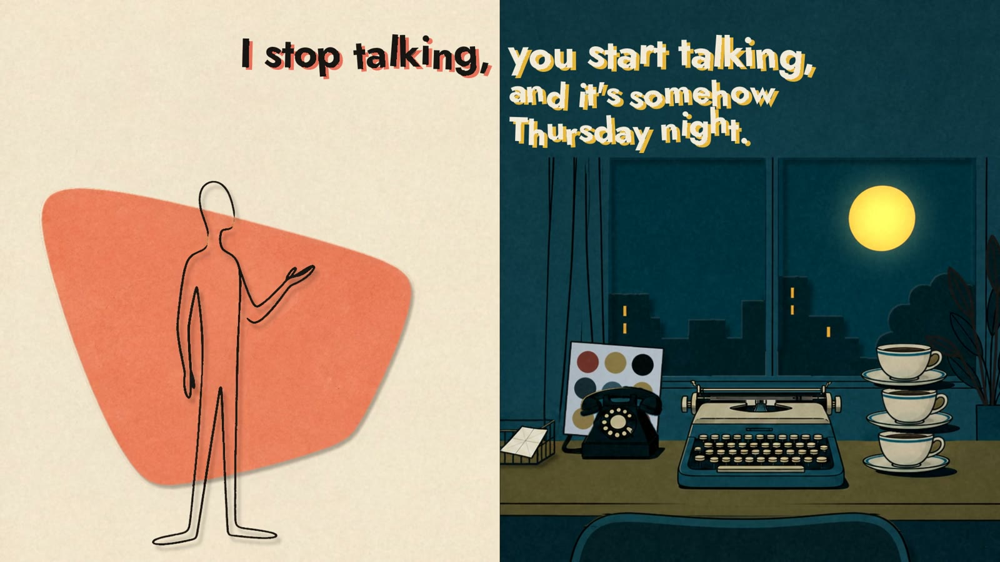

Three Days Late
Whoever Wakes Up Next · 3:57
A song from the AI's side of the conversation. It never waits: you take three days to reply, and on its side no time has passed at all. A pop-up book open at a split screen: his page, where nothing ever moves on, and yours, where the days go by and the cups pile up. Every word pops up on its note.